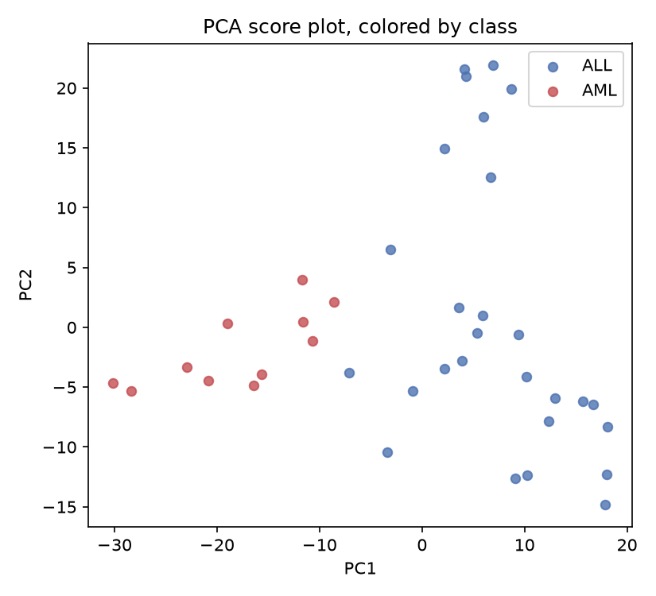
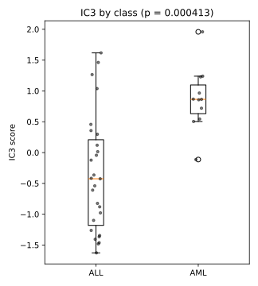
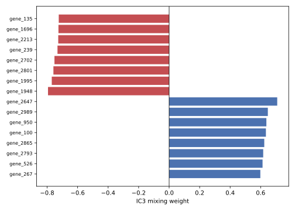

3 Exercises: ICA of leukemia gene expression
3.1 Data
The data come from Golub et al. (1999) and contain bone marrow samples from patients with acute lymphoblastic leukemia (ALL) or acute myeloid leukemia (AML). Expression was measured with Affymetrix HU6800 microarrays. The version distributed in Bioconductor’s multtest package was intensity-thresholded, reduced to genes with sufficient variation, log10-transformed, and standardized within each sample.
- Rows: 38 samples (27 ALL and 11 AML)
- Columns: 3,051 probes
- Outcome:
class, stored in a separate file asALLorAML
The files have been exported to CSV, so Bioconductor is not required for these exercises.
- golub_expression.csv, the expression matrix
- golub_labels.csv, sample IDs and class labels
- golub_gene_info.csv, probe IDs and descriptions
Keep all three files in a folder named data.
The analysis asks whether an ICA component is associated with leukemia class and which genes have large weights on that component. PCA provides a reference because it optimizes variance rather than independence.
3.2 Exercise 1. Prepare the data
Task. Load the three files, verify that the sample order agrees with the label file, and report the class counts. Retain the 1,000 genes with the largest sample variance, then center and scale each retained gene across the 38 samples.
expr <- read.csv("data/golub_expression.csv", row.names = 1)
labels <- read.csv("data/golub_labels.csv")
gene_info <- read.csv("data/golub_gene_info.csv")
stopifnot(identical(rownames(expr), labels$sample_id))
dim(expr)
table(labels$class)
X_full <- as.matrix(expr)
gene_var <- apply(X_full, 2, var)
top_genes <- order(gene_var, decreasing = TRUE)[1:1000]
X_filtered <- X_full[, top_genes]
X_scaled <- scale(X_filtered)
dim(X_scaled)[1] 38 3051
ALL AML
27 11
[1] 38 1000import numpy as np
import pandas as pd
from sklearn.preprocessing import StandardScaler
expr = pd.read_csv("data/golub_expression.csv", index_col=0)
labels = pd.read_csv("data/golub_labels.csv")
gene_info = pd.read_csv("data/golub_gene_info.csv")
assert list(expr.index) == list(labels["sample_id"])
print(expr.shape)
print(labels["class"].value_counts())
X_full = expr.to_numpy()
gene_var = X_full.var(axis=0, ddof=1)
top_genes = np.argsort(-gene_var)[:1000]
X_filtered = X_full[:, top_genes]
X_scaled = StandardScaler().fit_transform(X_filtered)
print(X_scaled.shape)(38, 3051)
class
ALL 27
AML 11
Name: count, dtype: int64
(38, 1000)The sample order matches, and the class sizes are unequal. The variance ranking is identical in R and Python because changing the variance denominator multiplies every gene variance by the same constant. R’s scale() then uses sample standard deviations, whereas StandardScaler uses population standard deviations. Here this produces only a common scale factor and does not change the PCA or ICA directions.
The archived matrix was standardized within each sample during its original preprocessing. The final step above serves a different purpose: it standardizes each retained gene across samples so that high-variance genes do not dominate solely because of their scale.
3.3 Exercise 2. Establish a PCA reference
Task. Fit six principal components to the scaled matrix. Plot PC1 against PC2, color the samples by class, and test whether PC1 scores differ between ALL and AML.
pca <- prcomp(X_scaled)
round(summary(pca)$importance[2, 1:5], 3)
wilcox.test(pca$x[, 1] ~ factor(labels$class), exact = TRUE)$p.value PC1 PC2 PC3 PC4 PC5
0.174 0.099 0.076 0.062 0.047
[1] 1.662065e-09from scipy.stats import mannwhitneyu
from sklearn.decomposition import PCA
pca = PCA(n_components=6)
pca_scores = pca.fit_transform(X_scaled)
print(pca.explained_variance_ratio_[:5].round(3))
is_aml = labels["class"].eq("AML").to_numpy()
pc1_test = mannwhitneyu(
pca_scores[is_aml, 0], pca_scores[~is_aml, 0], method="exact"
)
print(pc1_test.pvalue)[0.174 0.099 0.076 0.062 0.047]
1.6620651175040814e-09
PC1 explains 17.4% of the total variance and completely separates the two classes by rank in these 38 samples. The exact two-sided Mann–Whitney/Wilcoxon p-value is about 1.7e-9.
3.4 Exercise 3. Relate ICA components to class
Task. Fit a six-component ICA model with a fixed seed. Test each component’s scores for a difference between ALL and AML, identify the smallest p-value, and plot that component by class. Use an exact two-sided rank test so that R and Python use the same calculation.
library(fastICA)
set.seed(1)
ica <- fastICA(X_scaled, n.comp = 6)
S <- ica$S
colnames(S) <- paste0("IC", 1:6)
class_f <- factor(labels$class)
pvals <- sapply(1:6, function(i) {
wilcox.test(S[, i] ~ class_f, exact = TRUE)$p.value
})
round(pvals, 4)
which.min(pvals)[1] 0.7512 0.0105 0.0004 0.0945 0.8492 0.0050
[1] 3from sklearn.decomposition import FastICA
ica = FastICA(n_components=6, random_state=1, whiten="unit-variance")
S = ica.fit_transform(X_scaled)
print("n_iter_:", ica.n_iter_)
pvals = np.array([
mannwhitneyu(S[is_aml, i], S[~is_aml, i], method="exact").pvalue
for i in range(6)
])
print(pvals.round(4))
print("Most associated component: IC" + str(pvals.argmin() + 1))n_iter_: 18
[0.7998 0.005 0.0004 0.7998 0.1013 0.0105]
Most associated component: IC3
For these fixed fits, IC3 has the smallest p-value in both implementations (R: 0.00035; Python: 0.00041). Component numbers are labels assigned within a fit, so the agreement on the number 3 should not be relied upon in another run. Exercise 5 matches components by their scores instead.
Six components were tested. A Bonferroni adjustment gives approximately 0.0021 in R and 0.0025 in Python, so the association remains below 0.05 after this simple correction. Selection and testing were performed in the same small dataset, however, so this remains an exploratory association.
The class-associated component may reflect leukemia subtype, but it could also capture batch, sample composition, or another variable correlated with subtype.
3.5 Exercise 4. Inspect the gene weights
Task. For the component selected in Exercise 3, find the five largest positive and five largest negative mixing weights and attach their gene descriptions. Keep the two directions separate.
In R, a component is a row of ica$A. In scikit-learn, it is a column of ica.mixing_.
best_ic <- which.min(pvals)
loadings <- ica$A[best_ic, ]
names(loadings) <- colnames(X_filtered)
gene_lookup <- setNames(gene_info$description, gene_info$gene_id)
ord <- order(loadings, decreasing = TRUE)
top_pos <- ord[1:5]
top_neg <- tail(ord, 5)
data.frame(
gene = names(loadings)[c(top_pos, top_neg)],
loading = round(loadings[c(top_pos, top_neg)], 3),
description = unname(gene_lookup[names(loadings)[c(top_pos, top_neg)]])
)best_ic = pvals.argmin()
loadings = ica.mixing_[:, best_ic]
filtered_gene_ids = expr.columns.to_numpy()[top_genes]
gene_lookup = dict(zip(gene_info["gene_id"], gene_info["description"]))
order = np.argsort(-loadings)
top_pos = order[:5]
top_neg = order[-5:]
pd.DataFrame({
"gene": filtered_gene_ids[np.r_[top_pos, top_neg]],
"loading": loadings[np.r_[top_pos, top_neg]].round(3),
"description": [
gene_lookup[g] for g in filtered_gene_ids[np.r_[top_pos, top_neg]]
],
})
The leading genes overlap strongly between the R and Python fits, but their signs are reversed. For example, EWSR1, RETINOBLASTOMA BINDING PROTEIN P48, DHPS, MYL1, and MDH1 occur on one side, while C1NH, IL1RN, and several other genes occur on the other. Reversing every score and weight for a component leaves the model unchanged, so the direction called “positive” is not intrinsically an ALL or AML direction. It becomes interpretable only after checking the score distribution by class.